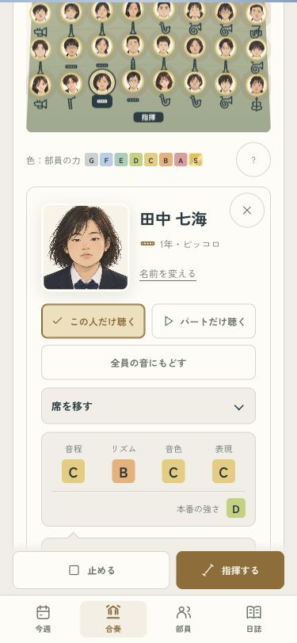
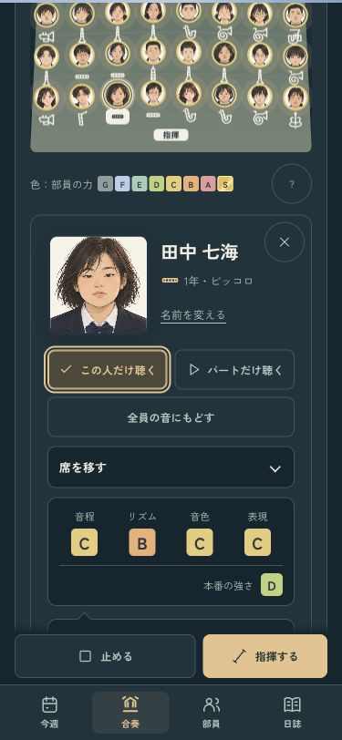
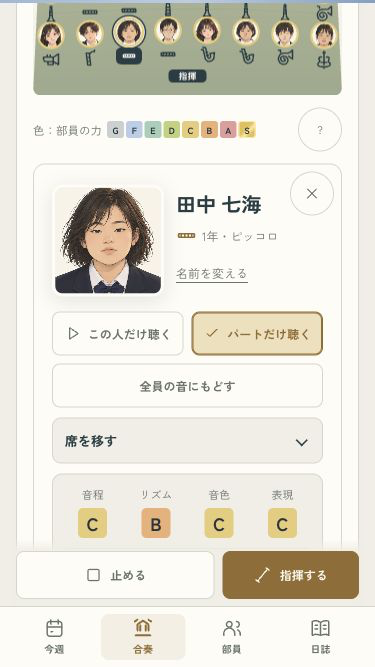
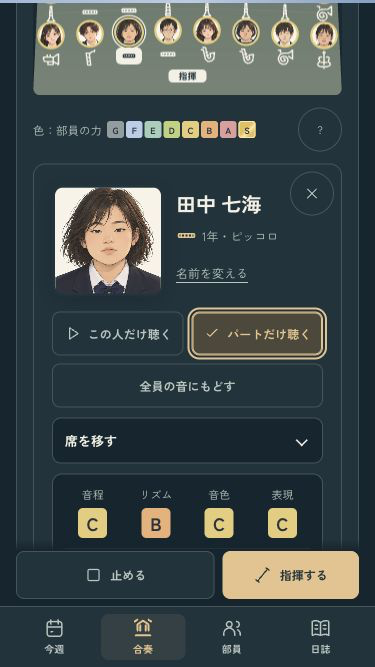

B · 舞台の中へ
この子の音から、みんなの音へ。
本人・パートのボタンを押すと、金色のチェックで聴いている対象が分かります。もう一度押すと全員の音へ戻り、演奏はそのまま続きます。


小さい画面と、パートの読み込み待ち
375×667でもチェックで対象が分かり、待っている間に全員へ戻すこともできます。


全15曲・本人とパートの音・入力と開いた内容の保持・自然終了・1年分の進行を確認済み。
iPhoneへ更新済み。今回は端末ロック中のため起動は未確認です。
ミラーリングなし · codex/design · pushなし · 変更と確認の記録